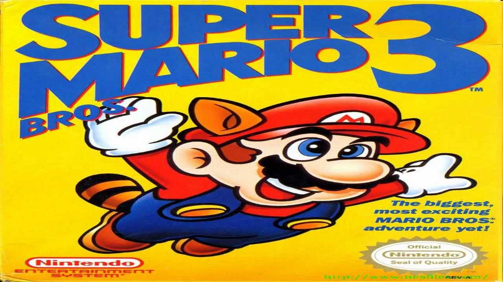

A História do Mario bros 3
imagem do jogo super Mario Bros 3
Super Mario Bros. 3 é um jogo de plataforma bidimensional, de rolagem lateral, no qual o jogador controla Mario ou Luigi. O jogo compartilha mecânicas de jogabilidade semelhantes com jogos anteriores da série — Super Mario Bros., Super Mario Bros. 2 no Japão e Super Mario Bros. 2 internacionalmente — enquanto introduz vários novos elementos. Além da corrida e do salto encontrados nos jogos anteriores, o jogador pode deslizar ladeiras, pegar e lançar blocos especiais e escalar livremente vinhas. Mario agora também pode voar e flutuar com o Super Leaf e o Tanooki Suit. [6] O mundo do jogo consiste em oito reinos, cada um subdividido em múltiplos níveis. Os oito mundos apresentam temas visuais distintos: por exemplo, o segundo mundo, "Desert Land" (ou "Desert Hill" nas versões prg0 japonesa e norte-americana), contém níveis cobertos de areia com pirâmides, enquanto os níveis do quarto mundo, "Giant Land" ("Ilha Grande"), contêm obstáculos e inimigos duas vezes sua altura e largura normais. [7]
O jogador navega pelo jogo através de duas telas de jogo: um mapa do mundo e um curso. O mapa do mundo exibe uma representação aérea do reino atual e tem vários caminhos que levam desde a entrada do mundo a um castelo. Os caminhos se conectam a painéis de ação, fortalezas e outros ícones do mapa, e permitem que os jogadores tomem rotas diferentes para alcançar o objetivo do reino. Mover o personagem na tela para um painel de ação ou fortaleza permitirá o acesso a esse curso, um estágio linear povoado de obstáculos e inimigos. A maior parte do jogo ocorre nestes níveis, com o jogador atravessando o palco correndo, saltando, voando, nadando e esquivando-se ou derrotando inimigos. [8][9] Os jogadores começam com um certo número de vidas e podem ganhar vidas adicionais pegando cogumelos 1-Up verdes escondidos em tijolos, ou coletando 100 moedas, derrotando vários inimigos em uma fileira com uma concha Koopa, ou saltando em inimigos sucessivamente sem tocar no chão. Mario e Luigi perdem uma vida se tiverem danos enquanto pequenos, caem em lava ou caem em um poço sem fundo, ou ficam sem tempo. O jogo termina quando todas as vidas são perdidas, embora o jogador possa continuar do último nível jogado selecionando "Continue". Selecionar "Continuar" vai definir o jogador de volta ao início do mapa overworld, e ganhar todas as suas vidas de volta.
Completar etapas permite que o jogador progrida através do mapa do mundo e para mundos sucessores. Cada mundo apresenta uma etapa final com um chefe para derrotar. Os sete primeiros mundos apresentam um dirigível controlado por um dos Koopalings, enquanto o jogador luta contra Bowser em seu castelo no oitavo mundo como o Chefe Final. Outros ícones do mapa incluem grandes pedregulhos e portas trancadas que impedem caminhos. Mini-jogos e telas bônus no mapa fornecem ao jogador a chance de obter power-ups especiais e vidas adicionais. Power-ups obtidos nestes mini-jogos são armazenados em uma reserva, e podem ser ativados pelo jogador a partir da tela do mapa. [8][9]
Além de itens especiais de jogos anteriores como o Super Mushroom, Super Star e o Fire Flower, novos power-ups são introduzidos que fornecem ao jogador novas opções. O Super Leaf e o Tanooki Suit dão a Mario guaxinim e tanooki aparições, respectivamente, permitindo que ele voe por um curto período de tempo. O Terno Tanooki também permite que ele se transforme em Estátua Mario para evitar inimigos por um curto período de tempo. Transformar-se em uma estátua de Tanooki enquanto pula resulta em Mario batendo no chão e matando quaisquer inimigos que estejam diretamente sob ele; esta é a primeira aparição do movimento agora padrão "ground pound" na série Mario. [10] O novo "Frog Suit" aumenta muito a velocidade e agilidade subaquática do personagem, e aumenta a altura do salto em terra. Outro terno novo, o Hammer Suit, dá a Mario a aparência do inimigo Hammer Bro. e permite que ele jogue martelos contra os inimigos e resista a ataques de fogo quando se agacha.
Super Mario Bros. 3 inclui uma opção multiplayer que permite que dois jogadores joguem o jogo, revezando-se na navegação no mapa do mundo e acessando os níveis de palco. O primeiro jogador controla Mario, enquanto o outro controla Luigi (uma troca de paleta de Mario). Através deste modo, os jogadores podem acessar vários mini-jogos, incluindo um remake do jogo de arcade original Mario Bros. em que um jogador tem a oportunidade de roubar as cartas de outro, mas pode perder sua vez se perder o mini-jogo. [11]